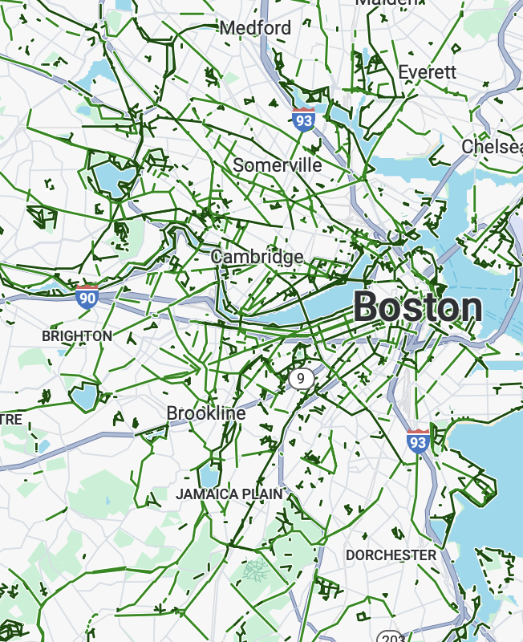

I ride every Wednesday before work with some local friends. Usually, we ride north and west to the leafy suburbs of Winchester, Lexington, and Arlington but, this week, we dove south into Boston and more traffic than usual. As a cyclist, it’s impossible not to think about the prospect of getting steamrolled by an SUV no matter how much we try to dissonance we try to cogitate. My friend—a bike mechanic who rides multiple times every day—asserted that Cambridge’s bike lanes had gotten out of control. Umm what?
He explained: separating bikes from cars only made cars feel like they could drive as they do in the suburbs, where bikes are not [as] present; instead, it’s the attention that drivers pay which adds up to safety for cyclists. To his credit, most bike-car crashes occur at intersections, even in areas where the roads between intersections aren’t protected by bike lanes. The lack of protection when it counts, coupled with the fact that bike lanes feel safe create the perception of safety without the fact of it. Instead, he said, drivers choosing not to hit cyclists is the only way cyclists won’t be hit. Cambridge feels safe to bike in because cyclists are visible not because they are separated.
Okay…but the same drivers continue from Cambridge into Boston: why then does cycling in Boston feel so much scarier? One reason could be that my individual experience of biking in Boston is largely crossing the few bridges between the 2 cities, the most congested asphalt around.

Yet, pretty much everyone agrees that Boston feels a lot worse to bike in than Cambridge.
The obvious answer to this question is that Cambridge has a more extensive bike lane network than Boston:

There are other noticeable differences in their road networks that may impact driver attention: 1. Cambridge has more common speed tables, a grade change that can interrupt the driving experience 2. Cambridge has more 5+ way intersections, which feature unfamiliar stoplight patterns 3. There are no direct outlets from an interstate into Cambridge, unlike I-90 and I-93 in Boston; as a result, drivers come from slower speeds when entering the city
I won’t try to measure the impact of these differences but I’ll note that my friend’s argument has some weight. Once I got home, I looked this debate up. I didn’t find anything immediately relevant to the US context but learned that the distinction between separation and attention parallels the distinction between the Danish and Dutch approaches to bike safety. The Danes prefer “objective safety” with physical barriers between cars and bicycles, while the Dutch have afforded cyclists the legal priority but allow them to comingle with cars in the same stretch of pavement. If these distinctions are hard to grasp, the differences that result in the design of roundabouts in Denmark and the Netherlands may be clearer:


Roundabout design
The Danish roundabout clearly demarcates space for cyclists and actually puts them on a different grade, while the Dutch version mixes them with little direction to the cars. I say that these distinctions parallel the situation here because the starting point is so different: these situations only apply when separating bike from pedestrian from car, which the Dutch call unbundling, isn’t available. Remember that cycling trips account for 27% of trips in the Netherlands and 16% in Denmark while, in the US, it’s about 3%.
My recent trip to Italy showed that the Dutch approach can even hold true given infrastructure closer to America, with few bike lanes outside of cities. On the roads between Milan and Verona, I saw way fewer bike lanes and way more roundabouts than I expected. 6ish hours of driving yielded less than 25 stoplights but at least 75 roundabouts. These weren’t the sorting monstrosities we have in the States near highways but tight little circuits, requiring drivers to slow and—yes—pay attention. I also understand Italy has more speed cameras than anywhere else in the EU[^Though this may be changing.], with the result being that—yes—drivers go the speed limit.
The distinction bewteen separation and attention may be a false one: I think, and my other friends who rode on Wednesday agreed, that he sight of those green strips of asphalt and turn boxes and bike stoplight signals make it clear that drivers in Cambridge should expect cyclists. If you can build bike lanes, do it, it’s a great way to build the feeling of safety, objective safety, and the attnetion you need to be safe outside the lanes. This conversation did leave me wondering if we in the US have been way too focused on lanes instead of driver behavior, however.
Bike lanes, while sometimes contentious, are nothing compared to automatic speed camera enforcement or, as New York City showed, congestion tolling. Politically, explicitly regulating speed is mostly beyond the Overton window. Infrastructure choices to calm cars are more palatable but don’t receive the same attention, even if they are cheaper than ripping up a whole roadway to squeeze some more cyclist protection. Further, calmer cars mean safer streets for pedestrians, who don’t benefit nearly as much from bicycle lanes (and who may feel less safe when cyclists are moving in a separate lane nearer to sidewalks).
So, is the best bike safety policy actually a car policy?